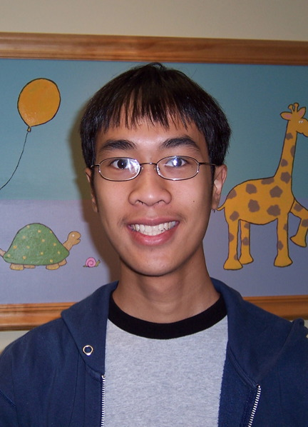
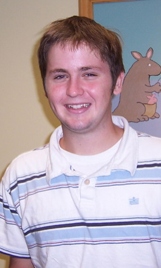

People |
|
| Justin Halberda, PhD. halberda@jhu.edu http://www.psy.jhu.edu/~halberda/
phone: 410-516-6289 I have interests in visual attention and visual working memory. Recently, this has led to interests in set-based representations (e.g. number of items, average size, average orientation, centroid). Such representations collapse across many individuals to represent general tendencies of a group of items. I am also interested in the psychophysics of numerical estimation; the innate ability to approximate the number of items in a set. |
|
|  | Ryan Ly Undergraduate Hi, my name is Ryan Ly and I'm a sophomore studying cognitive neuroscience and computer science. I am interested in all aspects of cognition, especially memory, attention, perception, and emotion, and am also interested in applying and relating computer science to studying cognitive neuroscience. I'm excited to be a part of the new Vision Cognition Lab and hope to help unravel some of the mysteries regarding our abilities to process collections of visual items. |
|  | Billy Prin Undergraduate My name is Billy and I am a junior Computer Science major. I am interested in how human learning and cognition works, and how what we learn can be applied to machine learning. |